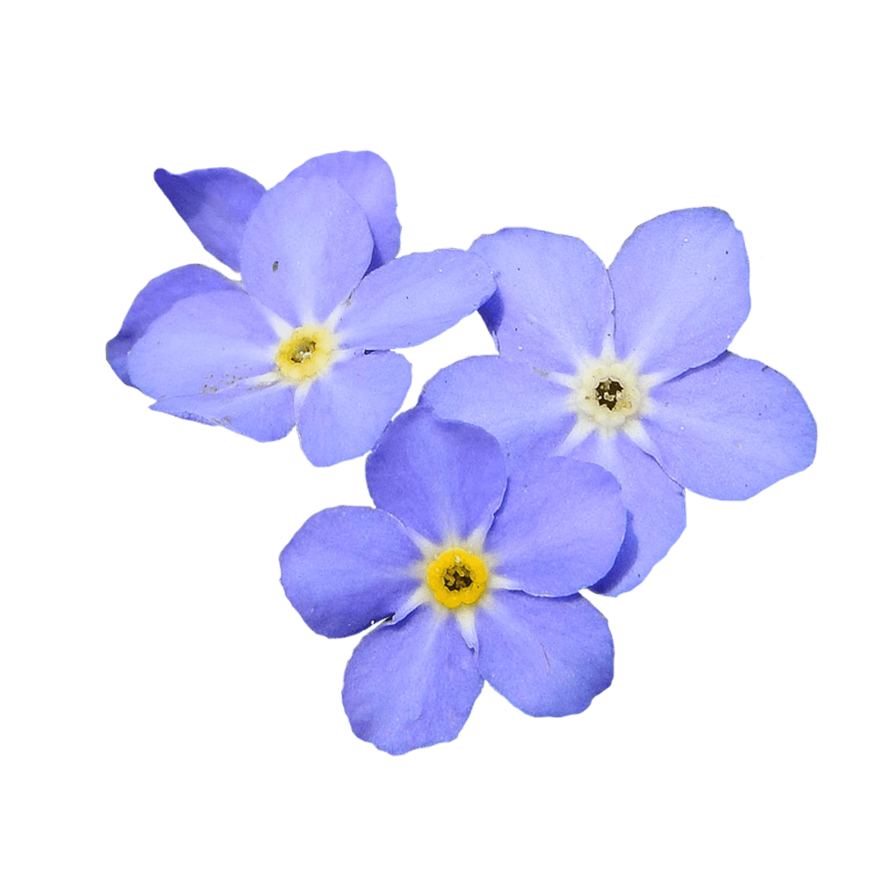

Fenix is a serif typeface designed for use in both display and long text. Very inspired by calligraphy, it has strong serifs and rough strokes. Its proportions are designed to gain space savings in text, both in height and width. It is elegant at large sizes and legible at the same time, with a lot of rhythm in small sizes.
Font available from Google Fonts.
The true Forget-Me-Not flower produces charming, five-petaled, blue blooms with yellow centres explode from the stems from May through October. Flower petals are sometimes pink.
Forget-Me-Not plants often grow near brooks and streams and other bodies of water which offer the high humidity and moisture that is desirable to this species.
Forget-Me-Not plants symbolize true love. The Forget-Me-Not flowers are a medium, “true blue”. And as the name suggests, they are given or used to decorate gifts with the hope the recipient will not forget the giver. It also symbolizes faithful love and memories.